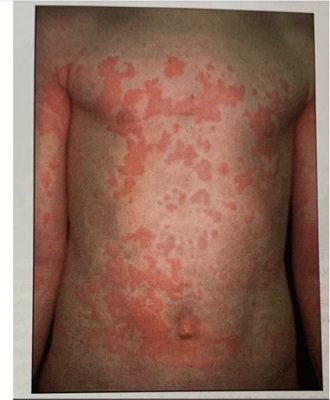
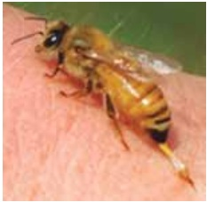
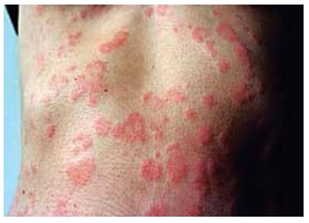

Questão 1 · Cutâneo Subcutâneo e Mucosa · Sistema Respiratório · 4000190614Quando a urticária pode ser o início de uma reação anafilática mais grave?
A Quando a pele apresentar urticária disseminada com angioedema.
B Quando o prurido for intenso sem melhora com anti-histamínicos.
C Quando houver dor abdominal e vômitos no dia anterior à urticária.
D Quando houver acometimento rápido da pele associado à falta de ar e sibilos.
Questão 2 · Vias aéreas · Epinef rina · 4000190499Mulher de 27 anos chega ao setor de Emergência trazido pelo SAMU relatando desmaio após ingestão de torta com recheio de camarão. Antes de perder os sentidos, relatou ao acompanhante cólicas abdominais. Ao exame físico: FC:122bpm; PA:80X40mmHg; FR:32ipm; SpO2:91%; Glasgow: 12; Pupilas isocóricas e reativas. Está hidratada, descorada, acianótica, anictérica, com lesões urticariformes difusas, além de angioedema em pálpebras, lábios e língua. À ausculta respiratória, murmúrios vesiculares reduzidos globalmente, com estridor audível bilateralmente. Ausculta cardíaca sem alterações, abdome plano, flácido e responsivo à palpação profunda, com ruídos hidroaéreos aumentados. Assinale a alternativa com melhor conduta a indicar neste momento.
A Aplicar anti-histamínico H2 via endovenosa e agonista beta-2 adrenérgico via inalatória.
B Administrar glicocorticoide via endovenosa e adrenalina por via inalatória.
C Aplicar adrenalina via intramuscular e preparar material para intubação precoce.
D Administrar adrenalina via endovenosa e agonista beta-2 adrenérgico via inalatória.
Questão 3 · Quadro Clínico · Cutâneo Subcutâneo e Mucosa · 4000190422Escolar, sexo masculino, com 5 anos de idade, estava brincando com seu irmão em uma casa de campo quando apresentou subitamente edema labial, tosse, rouquidão, dispneia e vômitos. O irmão adolescente refere que estavam perto de uma colmeia. No exame físico não existem lesões urticariformes. A pressão arterial estava normal. Identi ca-se, na ausculta, alguns raros sibilos. Sobre essa condição, é correto afirmar que
A o diagnóstico de anafilaxia é improvável pela ausência da hipotensão arterial.
B a ausência de urticária pode ocorrer em uma anafilaxia grave, potencialmente fatal.
C a primeira droga a ser administrada nessa situação é o broncodilatador por via inalatória.
D a dispneia e a ausculta pulmonar nessa situação caracterizam a crise asmática como grave.
E a primeira droga a ser administrada nessa situação deve ser a adrenalina por via subcutânea.
Revisar: possível letra faltando em enunciado
Questão 4 · Epinef rina · 4000189404A Ana laxia é sempre uma emergência médica que se caracteriza por imprevisibilidade, rápida instalação e risco real de morte. Com relação à Anafilaxia, é CORRETO afirmar:
A Com base nos sintomas inicias, é possível prever com segurança a gravidade e o tempo de evolução do evento anafilático.
B A avaliação laboratorial é essencial para o diagnóstico precoce da Anafilaxia.
C A hipersensibilidade ao veneno de insetos da ordem Hymenoptera é o desencadeante mais comum de reações anafiláticas.
D A adrenalina é a droga-chave na Anafilaxia e a sua rápida administração garante diminuição da mortalidade.
Questão 5 · Anaf ilaxia · 4000189278Mulher, 32 anos, comparece ao PS por queixa de cefaléia, sem sinais de alarme. Foram prescritos dipirona e cetoprofeno endovenosos. Trinta minutos após a infusão, evoluiu com estridor laríngeo,desconforto respiratório, sibilância e hipotensão. A melhor conduta inicial é:
A Soro fisiológico 0,9% 1000 ml EV agora
B Metilprednisolona 60 mg EV
C Dopamina EV 5mcg/Kg/min
D Adrenalina 0,5 mg IM
Questão 6 · Quadro Clínico · Tratamento · Diagnóstico · 4000188576Maria Paula, 2 anos, está no 1o DPO de Herniorra a Inguinal Esquerda. Após a administração de analgésico oral, a criança inicia quadro de náuseas, vômitos, dor abdominal, rash cutâneo urticariforme, seguidos de desconforto respiratório e rebaixamento do nível de consciência. Ao exame físico: EGMau, hipoativa. AR: MV+ AHT com sibilos expiratórios. FR: 36 ipm. Sat.O2: 89% (ar ambiente). ACV: RCR 2T, FC: 180 bpm. PA: 72:48 mmHg. Baseado neste caso, assinale a alternativa CORRETA.
A Trata-se de uma anafilaxia e, portanto, adrenalina intra-muscular deverá ser administrada precocemente, além de suporte de oxigênio e expansões volêmicas.
B Trata-se de uma anafilaxia e, portanto, o uso de anti-histamínicos está indicado e deverá ser a primeira linha de tratamento, além de suporte de oxigênio e expansões volêmicas.
C Trata-se de uma anafilaxia e, portanto, corticóides sistêmicos devem ser a primeira droga de escolha, além de suporte de oxigênio e expansões volêmicas.
D Trata-se de uma anafilaxia e, portanto, a adrenalina endovenosa deverá ser priorizada neste caso, além de suporte de oxigênio e expansões volêmicas..
E Trata-se de uma anafilaxia, portanto, o paciente deverá receber apenas suporte de oxigênio e expansões volêmicas.
Questão 7 · Urticária Espontânea · 4000188317Assinale a opção correta sobre a principal causa de urticária aguda em crianças.
A anti-inflamatórios não hormonais
B alimentos
C antígenos inaláveis
D frio
E vírus
Questão 8 · Quadro Clínico · Def inição · 4000187535Assinale a afirmativa em que os critérios para anafilaxia foram preenchidos:
A Criança de 6 meses ingeriu pela primeira vez fórmula de leite de vaca e apresentou urticária com angioedema em lábios e orelha.
B Lactente que recebeu uma ferroada de abelha apresenta urticária e edema localizados ao redor da picada na coxa e com dor abdominal e vômitos.
C Adolescente alérgico a amendoim ingeriu alimento em festa de aniversário e apresentou urticária em face.
D Lactente sibilante de 8 meses com febre, recebendo inalações com beta 2 agonista há 3 dias apresentou urticária após receber dipirona.
Questão 9 · Epinef rina · 4000187465Homem de 18 anos de idade, previamente hígido, é admitido na emergência por mal-estar, rash cutâneo, vômitos, dispneia e sonolência há 30 minutos. Relata que o quadro se instalou rapidamente após ter começado a almoçar, nega quadros prévios semelhantes. Ao exame físico está corado, hidratado e sonolento, respondendo perguntas simples ao chamado. A pressão arterial era de 80x40mmHg; frequência cardíaca de 150bpm, respiratória de 28irpm e saturação de oxigênio de 94%. O exame respiratório apresentou sibilos expiratórios difusos, leve tiragem intercostal e retração de fúrcula esternal. Tinha pulsos nos, com tempo de enchimento capilar de 2 segundos. Na pele foi visto rash em face, tórax (anterior e dorso) e porção proximal de membros superiores e inferiores, como demonstrado na figura a seguir. Sem outros achados ao exame físico. Qual é a conduta imediata que deve ser adotada neste momento e, em caso de refratariedade, a conduta subsequente que deverá ser adotada?

A Epinefrina 1mg endovenosa em bolus seguida de pulsoterapia com corticoide, se necessário.
B Epinefrina 0,5mg subcutânea seguida de epinefrina endovenosa em bolus, se necessário.
C Epinefrina 0,5mg intramuscular seguida de dose adicional em 5 minutos, se necessário.
D Intubação orotraqueal e epinefrina 1mg subcutânea seguidas de corticoterapia, se necessário.
Questão 10 · Diagnóstico · 4000187102Sobre os exames necessários para o diagnóstico de Urticária Aguda, assinale a alternativa correta.
A Hemograma completo e radiografia de tórax.
B Não há necessidade de exames.
C PCR e teste rápido para estreptococos.
D Sedimento urinário e VHS.
Questão 11 · Tratamento · Pediatria · 4000184084Paciente de 7 anos, sexo masculino, com antecedente de asma em uso de medicação contínua. Estava brincando no parquinho quando começou a sentir dor intensa no braço esquerdo. Após cerca de 30 minutos, começou a apresentar tosse, dor abdominal, vômitos e diarreia. Levado ao pronto atendimento, foi colocado sob fonte de oxigênio, sob monitorização e um acesso periférico foi obtido. Ao exame clínico, estava em regular estado geral, FC: 145 bpm, FR: 34 irpm, PA: 82x30 mmHg, Saturação 92% em ar ambiente, ausculta cardíaca sem alterações e ausculta pulmonar com sibilos difusos. Na exposição, foi notada a seguinte lesão: Além de oxigênio e expansão volêmica, qual a conduta a ser prontamente realizada?

A Bloqueador H1 e H2; corticosteroide e adrenalina (1:1.000) endovenosos.
B Adrenalina (1:1.000) intramuscular; elevação dos membros inferiores.
C Soro antiaracnidico 3 ampolas e morfina endovenosos; bloqueio local.
D Antiescorpiônico endovenoso 2-3 ampolas; alfa-1 bloqueador oral.
Questão 12 · Outras Urticárias · 4000183413Uma paciente de 18 anos refere que, nos últimos quatro meses, apresentou dois episódios de edema súbito de pálpebras e lábios que duraram cerca de três dias. Procura o médico assustada porque na semana passada apresentou episódio de di culdade respiratória e rouquidão, que foi diagnosticado como edema de glote. Nega urticária e prurido nas crises. Nega consumo de alimentos ou medicamentos suspeitos nos episódios e refere uso apenas de anticoncepcional oral, iniciado há seis meses. Qual procedimento, dentre os abaixo citados, seria mais útil para estabelecer o diagnóstico desta paciente?
A Dosagem de IgE
B Dosagem do inibidor da C1 esterase
C Prick teste
D Espirometria
E Dosagem de IgE específica para trigo e látex
Questão 13 · Tratamento · Pediatria · 4000183243Arthur, de quatro anos de idade, foi levado por sua mãe ao pronto-socorro infantil com história de ter iniciado quadro de vômitos e diarreia (mais de cinco episódios) havia uma hora. Segundo a mãe, durante o trajeto ao pronto-socorro, Arthur começou a apresentar lesões na pele, por todo o corpo, junto com desconforto respiratório. No exame físico, foram observadas as seguintes alterações significativas: lesões urticariformes na face, nos membros superiores e no tórax; murmúrios vesiculares diminuídos com sibilos bilateralmente; tiragem subcostal e tiragem de fúrcula; tempo de enchimento capilar de cinco segundos. O paciente foi, então, levado para a sala de emergência, monitorizado, com oferta de oxigênio em máscara não reinalante e com um acesso venoso periférico. Foram observados os seguintes sinais vitais: frequência cardíaca = 120 bpm; frequência respiratória = 65 ipm; pressão arterial = 70 mmHg × 40 mmHg; saturação de O₂ = 83% em ar ambiente. Nesse caso clínico, o paciente deve receber, imediatamente,
A prometazina endovenosa.
B adrenalina intramuscular.
C hidrocortisona endovenosa.
D metilprednisolona endovenosa.
E salbutamol endovenoso.
Questão 14 · Tratamento · Pediatria · 4000183242Arthur, de quatro anos de idade, foi levado por sua mãe ao pronto-socorro infantil com história de ter iniciado quadro de vômitos e diarreia (mais de cinco episódios) havia uma hora. Segundo a mãe, durante o trajeto ao pronto-socorro, Arthur começou a apresentar lesões na pele, por todo o corpo, junto com desconforto respiratório. No exame físico, foram observadas as seguintes alterações significativas: lesões urticariformes na face, nos membros superiores e no tórax; murmúrios vesiculares diminuídos com sibilos bilateralmente; tiragem subcostal e tiragem de fúrcula; tempo de enchimento capilar de cinco segundos. O paciente foi, então, levado para a sala de emergência, monitorizado, com oferta de oxigênio em máscara não reinalante e com um acesso venoso periférico. Foram observados os seguintes sinais vitais: frequência cardíaca = 120 bpm; frequência respiratória = 65 ipm; pressão arterial = 70 mmHg × 40 mmHg; saturação de O₂ = 83% em ar ambiente. Considere que, no caso clínico em questão, o paciente tenha apresentado melhora do quadro de urticária e de desconforto respiratório, porém mantidos o tempo de enchimento capilar lenti cado e a hipotensão, tendo a mãe relatado que o paciente toma propranolol devido a um hemangioma. Nessa hipótese, a melhor medicação a ser administrada a Arthur é
A propranolol.
B salbutamol.
C glucagon.
D cetamina.
E atropina.
Revisar: possível letra faltando em enunciado
Questão 15 · Tratamento · Pediatria · 4000182991Menina de 8 anos, asmática, durante uma festa de aniversário, comeu doces e salgados, brincou muito na grama, quando passou a sentir tosse, cansaço e fez uso de beta 2 agonista de curta duração sem melhora. No pronto socorro, foram observadas placas e pápulas eritematosas com edema central, de tamanhos variados, em tronco, muito pruriginosas, além da presença de um inseto na pele (imagem). A conduta inicial é:

A anti-histamínico via oral e corticoide intravenoso.
B inalação com fenoterol e anti-histamínico intravenoso.
C inalação com fenoterol e corticoide via oral.
D adrenalina (1:10000) 0,3mg via intramuscular.
Questão 16 · Quadro Clínico · Pediatria · 4000181485Pré-escolar apresenta episódio súbito de broncoespasmo e hipotensão, após ingestão de amendoim. Nega sintomas anteriores, não apresenta lesão de pele ou mucosa. Sobre esta situação analise as assertivas abaixo. I. – O diagnóstico de anafilaxia é improvável. PORQUE II. – A ausência de lesões cutâneas ou mucosas descarta esta hipótese. A respeito destas asserções, assinale a opção cor reta.
A As asserções I e II são proposições verdadeiras, e a II é uma justificativa da I.
B As asserções I e II são proposições verdadeiras, mas a II não é uma justificativa da I.
C A asserção I é uma proposição verdadeira, e a II é uma proposição falsa.
D A asserção I é uma proposição falsa, e a II é uma proposição verdadeira.
E As asserções I e II são proposições falsas.
Questão 17 · Tratamento · Pediatria · 4000170598Um escolar de sete anos de idade foi almoçar com sua família em um restaurante de frutos do mar. Após a saída do restaurante, o paciente começou a queixar-se de dor abdominal de forte intensidade e apresentou três episódios de vômito em dez minutos, sendo levado ao serviço de emergência. Na admissão, apresentou novo episódio de vômito e um episódio de diarreia, mantendo queixa de cólica. Ao exame: regular estado geral; eritema em tronco e membros; e sibilos esparsos. Com base nesse caso hipotético, assinale a alternativa que apresenta o medicamento que o paciente deverá receber, o mais precocemente possível.
A salbutamol
B prednisona
C metilprednisolona
D manitol
E epinefrina
Questão 18 · Dermatologia · Antihistamínicos · Manif estação Clínica · 4000170019Adolescente de 17 anos apresenta lesões cutâneas há dois dias, conforme a imagem, que aparecem e desapare-cem em um período de 4 a 6 horas, sem outras alterações cutâneas ou sistêmicas. AP: em uso de amoxacilina há 10 dias devido à infecção de orofaringe prescrita para ser mantida por 14 dias. O diagnóstico e a conduta são, respectivamente,

A urticária aguda com angioedema; corticoterapia via oral e manutenção da amoxacilina até completar 14 dias.
B urticária aguda; anti-histamínico via oral e suspensão da amoxacilina.
C urticária crônica; anti-histamínico via oral, corticoterapia via oral e manutenção da amoxacilina até completar 14 dias.
D anafilaxia; adrenalina subcutânea, anti-histamínico via endovenosa, corticoterapia via endovenosa e suspensão da amoxacilina.
Questão 19 · Tratamento · 4000170008O principal determinante para o sucesso do tratamento de uma criança com anafilaxia é:
A a identificação antecipada do alérgeno.
B a ressuscitação fluídica.
C o uso precoce de adrenalina IM.
D a prescrição imediata de corticoide e anti-histamínico.
Questão 20 · Tratamento · Pediatria · 4000166428Leia o caso clínico a seguir. Ana, de dois anos, 15 kg, comparece ao pronto-socorro pediátrico no município de Caldas Novas. A mãe relata que a lha é muito saudável e nunca adoeceu, mas queixou otalgia hoje e, por isso, deu ibuprofeno (30 gotas); pouco tempo depois a criança apresentou vômitos e chorou muito, com dor abdominal, tipo cólicas, se retorcendo muito, chorando há quase meia hora. Imunização completa. Recebendo alimentação do hotel desde ontem. Nega febre. Nega contato com doentes. Ao exame: criança com REG, eupneica, corada, desidratada, afebril, acianótica, anictérica, chorosa (fácies de dor, se contorce demonstrando dor abdominal), irritada; rubor em tórax e abdome. ACV: RCR, 2T, sem sopros, FC: 144 BPM. Avaliação de ausculta pulmonar e pressão arterial comprometidas pela irritabilidade e choro da criança. Tempo de enchimento capilar de três segundos. Hiperemia de conduto auditivo à esquerda na otoscopia, edema labial, orofaringe sem alterações. Saturação de oxigênio: 94%. Glicemia capilar: 84 mg/dL. A abordagem terapêutica imediata, focada no diagnóstico clínico, deve ser a aplicação de:
A soro fisiológico e omeprazol, ambos por aplicação intravenosa.
B adrenalina via intramuscular e soro fisiológico via intravenoso.
C bromoprida via intramuscular e soro de reidratação por via oral.
D prometazina e bromoprida, ambos por aplicação intramuscular.
Questão 21 · Tratamento · 4000166313Das medidas terapêuticas a seguir, aquela que tem maior impacto na redução da mortalidade por choque anafilático é
A expansão volêmica.
B precocidade na administração de adrenalina.
C associação de bloqueador H1 e bloqueador H2.
D precocidade na administração de corticosteroide.
Questão 22 · Tratamento · Pediatria · 4000166186A atuação em emergência determina a necessidade criteriosa de conhecimento acerca do manuseio de pacientes gravemente afetados por anafilaxia. Quanto ao uso de adrenalina, assinale a alternativa correta.
A Em praticamente 95% dos casos, uma única dose de adrenalina controla e reverte o quadro.
B O uso da adrenalina na anafilaxia apresenta riscos para todos os casos, devendo, portanto, ser considerado como última opção terapêutica.
C Doses excessivas de adrenalina intravenosa são consideradas como de baixo risco, pouco importantes para arritmias e outros transtornos cardiovasculares, tendo em vista a necessidade de controle imediato da anafilaxia.
D As vias intravenosa e intramuscular são recomendadas para o tratamento da anafilaxia perioperatória por anestesistas experientes, embora as diretrizes internacionais recomendem o uso de adrenalina intramuscular para o tratamento de primeira linha em todos os ambientes.
E O uso de adrenalina, pela via subcutânea, na anafilaxia é o padrão mais seguro e mais eficiente na prática clínica.
Questão 23 · Tratamento · Diagnóstico · 4000165280Menino, 8 anos de idade, apresentou, subitamente, manchas vermelhas sobrelevadas em várias regiões do corpo, inchaço de pálpebras e lábio superior, hiperemia de conjuntivas e lacrimejamento, tosse e esforço respiratório discreto durante festa infantil, na qual brincou e comeu vários doces e salgados. No Pronto-Socorro, é recebido consciente, com sibilos difusos e saturação de oxigênio de 94%. O diagnóstico e a conduta adequados ao quadro são, respectivamente,
A urticaria generalizada; metilprednisolona IV.
B angioedema; defenidramina.
C crise asmática de etiologia alérgica; beta-agonista inalatório.
D anafilaxia; adrenalina IM.
E reação alérgica tardia; prednisolona VO.
Questão 24 · Pediatria · Anaf ilaxia · 4000165094Menina de 9 anos chega ao pronto atendimento com queixas de alergia na pele iniciada duas horas após ingerir pão, evoluiu com sonolência, tosse seca e rouquidão, congestão nasal, dispneia e dor abdominal. Antecedentes de dermatite atópica com eritrodermia. Baseado na sua principal hipótese diagnóstica analise as asserções abaixo e a relação proposta entre elas. I – Deve ser administrada imediatamente adrenalina de forma intramuscular. PORQUE II – Apesar de a situação ser pouco provavelmente causada pela história da ingestão, é o único medicamente devidamente comprovado nesta situação. A respeito destas asserções, assinale a opção correta.
A As asserções I e II são proposições verdadeiras, e a II é uma justificativa da I.
B As asserções I e II são proposições verdadeiras, mas a II não é uma justificativa da I.
C A asserção I é uma proposição verdadeira, e a II é uma proposição falsa.
D A asserção I é uma proposição falsa, e a II é uma proposição verdadeira.
E As asserções I e II são proposições falsas.
Questão 25 · Tratamento · Pediatria · 4000164830Um paciente de 26 anos é admitido com quadro de ana laxia com edema de glote. Qual das medicações abaixo deve ser administrada imediatamente?
A Epinefrina na dose de 1 mg por via intravenosa.
B Prometazina na dose de 50mg por via intramuscular.
C Epinefrina na dose de 0,3-0,5mg por via intramuscular.
D Hidrocortisona 500mg por via intravenosa.
Questão 26 · Tratamento · Pediatria · Diagnóstico · 4000164715Uma paciente feminina, 10 anos de vida, estava brincando no parque ao lado do hospital, e há 20 minutos pisou em um formigueiro. Há 5 minutos iniciou lesões avermelhadas e pruriginosas pelo corpo, dor abdominal e vômitos. Foi trazida imediatamente à emergência, observaram-se placas quentes e eritematosas por todo o corpo, Frequência Respiratória: 40 mrm, Frequência Cardíaca: 160 bpm, enchimento capilar em 2 segundos, normotensa, ausculta pulmonar normal. Frente a esse quadro, assinale a alternativa que indica a conduta inicial correta.
A Trata-se de um quadro de anafilaxia, devendo ser tratada com anti-histamínico via oral.
B Trata-se de um quadro de anafilaxia, onde a conduta inicial é a aplicação da adrenalina intramuscular.
C Trata-se de um quadro de urticária, devendo-se fazer o uso de prometazina intramuscular e aguardar 1 hora para reavaliar a paciente.
D Trata-se de um choque anafilático, devendo-se fazer expansão com cristaloide 20 ml/kg de maneira rápida, monitorização do paciente, corticoide e anti-histamínico via oral, oxigenioterapia.
E Trata-se de um quadro de anafilaxia e a conduta inicial é a expansão com cristaloide e uso da adrenalina endovenosa.
Questão 27 · Tratamento · 4000171543Adolescente de 13 anos é levada ao pronto-socorro com história de que há 1 hora ingeriu crustáceos, evoluiu com quadro de ana laxia. Recebeu 2 doses de adrenalina na diluição de (1:1000) 0,4 mg IM. Permaneceu deitada, com membros inferiores elevados, manteve estabilidade hemodinâmica, sem sinais de choque. Após 12 horas de observação clínica recebeu alta com a orientação de qual medicação:
A Prednisona + Ranitidina.
B Dexametasona + Prometazina.
C Dexametasona + Dexclorfeniramina.
D Prednisolona + Cetirizina.
Questão 28 · Tratamento · Pediatria · Diagnóstico · 4000151669Menino de 1 ano e 2 meses com história de alergia ao leite de vaca desde os 6 meses de vida apresentou ingestão acidental de um biscoito que continha leite na composição. Após 15 minutos da ingestão, iniciou com placas eritematosas e pruriginosas em face que evoluíram rapidamente, espalhando por todo corpo. Associado a isto, apresentou coriza, lacrimejamento, edema palpebral e sibilância. Sobre o caso acima, assinale a alternativa correta:
A Trata-se de um caso de urticária aguda com angioedema por alergia.
B Trata-se de um caso de anafilaxia por alergia alimentar IgE mediada. O tratamento a ser instituído é adrenalina intramuscular.
C Trata-se de um caso de anafilaxia por alergia alimentar IgE mediada. O tratamento a ser instituído é nebulização com anti-histamínico IM e corticosteróide IV.
D Trata-se de um caso de urticária aguda com angioedema por alergia alimentar IgE mediada. O tratamento a ser instituído é anti-histamínico.
Questão 29 · Pediatria · Anaf ilaxia · 4000146497Unidade de resgate traz à sala de emergência do pronto-socorro criança de 3 anos, que, após ter comido um “salgadinho” em uma festa de aniversário, há cerca de 20 minutos, apresentou diminuição de consciência, di culdade respiratória com estridor laríngeo e edema de lábios e língua. Ausculta pulmonar com murmúrio vesicular presente com alguns poucos sibilos. Também apresenta placas urticariformes em nádegas e coxa direita. A conduta inicial mais adequada é
A inalação com broncodilatador.
B prescrição de adrenalina intramuscular.
C acesso venoso e expansão com solução salina.
D prescrição de dexclorferinamina por via oral.
E administração de corticosteroide e anti-histamínico intravenosos.
Questão 30 · Urticária · 4000146237O angioedema está associado ao inchaço das camadas profundas dos tecidos cutâneos ou submucosos em razão do aumento da permeabilidade capilar. Em geral, as regiões mais afetadas são as descritas abaixo, exceto:
A joelhos.
B face.
C laringe.
D língua.
Questão 31 · Anaf ilaxia · Cirurgia · 4000146063Os principais agentes relacionados à anafilaxia são medicamentos, veneno de insetos e alimentos, sendo correto que:
A A anafilaxia não tem muitas apresentações clínicas, mas o comprometimento respiratório e o colapso cardiovascular nunca podem causar preocupação, devido à baixa mortalidade.
B A anafilaxia tem muitas apresentações clínicas, mas o comprometimento respiratório e o colapso cardiovascular podem causar a maior preocupação, devido inexistente mortalidade.
C A anafilaxia tem muitas apresentações clínicas, mas o comprometimento respiratório e o colapso cardiovascular podem causar a maior preocupação, devido à alta mortalidade.
D A anafilaxia tem muitas apresentações clínicas, mas o comprometimento respiratório e não o colapso cardiovascular podem causar a maior preocupação, devido à alta mortalidade
Questão 32 · Anaf ilaxia · 4000145990Mulher, 28 anos de idade, procura pronto-socorro por iniciar edema de lábios há 30 minutos, evoluindo com prurido generalizado, cólicas abdominais e vômitos após consumo de crustáceos. Ao exame clínico: pressão arterial = 100 x 70 mmHg, frequência cardíaca = 97 batimentos/minuto, frequência respiratória = 24 incursões/minuto, exame cardiopulmonar sem alterações. Qual deve ser a abordagem de primeira escolha para essa jovem no pronto-socorro?
A Glucagon
B Adrenalina
C Difenidramina
D Prednisona
Questão 34 · Pediatria · Anaf ilaxia · 4000140472Uma criança de 2 anos e 3 meses de idade, sexo masculino, chegou ao pronto atendimento com história de vômitos e edema de lábio superior que se iniciou cerca de 20 minutos após ter ingerido paçoquinha de amendoim na festa junina da escolinha. Ao exame físico apresenta tosse seca, encontra-se em REG, corado, hidratado, anictérico, acianótico. Apresenta edema em lábio superior direito, obstrução nasal leve e lacrimejamento ocular bilateral. Cardio: BRNF sem sopros. FC: 160 bpm. Pulmonar: murmúrio vesicular presente com discretos sibilos bilateralmente, sem retrações torácicas, com saturação de oxigênio de 95% e FR: 48 ipm. Abdome: ácido, globoso, ruídos hidroaéreos presentes, indolor à palpação. Pulsos cheios. Enchimento capilar rápido. A melhor conduta terapêutica para esse paciente é
A desloratadina via oral.
B epinefrina intramuscular.
C difenidramina endovenosa.
D salbutamol inalatório.
E prednisolona oral.
Questão 35 · Pediatria · Anaf ilaxia · 4000137961Criança de 5 anos de idade é atendida com queixa de apresentar, 30 minutos após a ingestão de alimentos, alterações cutâneas, com placas eritematosas elevadas, acompanhadas de estridor laríngeo. O primeiro medicamento, dentre os abaixo, a ser administrado para essa criança é:
A anti-histamínico endovenoso.
B epinefrina intramuscular.
C corticosteroide endovenoso.
D nebulização com adrenalina.
E vasopressina intranasal.
Questão 36 · Pediatria · Anaf ilaxia · 4000132827Uma menina de nove anos de idade é admitida no pronto-socorro infantil com quadro de obstrução nasal, rinorreia, prurido ocular, urticária e angioedema associados a dor abdominal e vômitos. Mãe relata que os sintomas descritos iniciaram subitamente após ingestão de frutos do mar. Diante desse quadro clínico, após as medidas iniciais de atendimento emergencial, o plantonista deve prescrever a aplicação imediata de:
A Anti-histamínico via intramuscular.
B Hidrocortisona via intramuscular.
C Adrenalina via subcutânea.
D Adrenalina via intramuscular.
Questão 37 · Anaf ilaxia · Cirurgia · 4000129894Paciente de 18 anos de idade relata três ferroadas por abelhas há 20 minutos, evoluindo com erupção urticariforme generalizada, pruriginosa, associada a edema significativo nos locais das ferroadas, bem como dispnéia e sibilância. Apresenta PA=100/64mmHg, FC=100, FR=28 mrm, Sat O2=92% em ar ambiente, ausculta pulmonar com sibilância difusa. Considerando a hipótese diagnóstica principal, assinale a assertiva correta.
A A atopia é geralmente considerada um fator de risco para a condição.
B A condição é causada por degranulação dos mastócitos não mediada por IgE.
C A maioria dos episódios ocorre de forma bifásica, com recorrência dos sintomas em pelo menos 1 hora após os sintomas iniciais.
D Ocupações que colocam os pacientes em regular proximidade de insetos dotados de ferrão tornam a alergia a estes menos provável.
E Paciente deve ser posicionado em decúbito dorsal, especialmente antes do uso de epinefrina, para evitar a “síndrome do coração vazio”.
Questão 38 · Pediatria · Anaf ilaxia · 4000129769Escolar, 7 anos e 10 meses, masculino, vem ao serviço de emergência devido a edema e prurido. Pai relata que o paciente estava almoçando quando percebeu que seu lho iniciou edema periorbitário e nos lábios. Durante atendimento apresentou vômitos e dor abdominal. Apresenta lesões em placa urticariformes eritematosas em ambos membros superiores e tronco, e angioedema em face. De acordo com a principal hipótese diagnóstica do caso, assinale a alternativa que contém a primeira droga que deve ser administrada.
A ranitina
B difenidramina
C metilprednisolona
D ondasetrona
E adrenalina
Questão 39 · Epinef rina · 4000130289Mulher, 26 anos, trazida ao Pronto Socorro com dispneia súbita há 10 minutos acompanhada de prurido no corpo e inchaço dos lábios e língua. Nega comorbidades. Exame físico: PA= 100x80 mmHg, oximetria de pulso (ar ambiente)= 93%, rubor facial e edema em lábios. A ABORDAGEM INICIAL É:
A Máscara laríngea.
B Epinefrina 1:1000, na dose de 0,5 mg (0,5 ml), via intramuscular.
C Difenidramina, na dose de 50mg, via intravenosa.
D Hidrocortisona, na dose de 5 a 10 mg/kg, via intravenosa.
Questão 40 · Cutâneo Subcutâneo e Mucosa · Tratamento · Epinef rina · 4000106412Uma criança de 7 anos começou a ter prurido intenso após ingestão de frutos do mar, acompanhado de placas eritemato edematosas em tronco e abdome e estridor laríngeo leve. A criança é saudável e já tinha comido frutos do mar anteriormente, sem nenhuma intercorrência. Deve-se
A afastar a possibilidade de anafilaxia, tendo em vista a ausência de histórico prévio, e administrar 1 mg/kg de difenidramina e 1 mg/kg de metilprednisolona intravenosos.
B afastar a possibilidade de anafilaxia, tendo em vista a ausência de histórico prévio, pensar em reação anafilactoide e administrar, imediatamente, 1 mg/kg de difenidramina e 1 mg/kg de ranitidina intravenosos.
C afastar a possibilidade de anafilaxia, tendo em vista a ausência de histórico prévio, e administrar inicialmente uma nebulização com 5 mL de adrenalina pura.
D considerar possibilidade de anafilaxia, tendo em vista o comprometimento respiratório e cutâneo, e administrar 0,01 mg/kg de adrenalina intramuscular.
E considerar a possibilidade de anafilaxia, tendo em vista o comprometimento respiratório e cutâneo, e administrar 1 mg/kg de difenidramina e 1 mg/kg de metilprednisolona intravenosos.
Questão 41 · Quadro Clínico · Diagnóstico Dif erencial · Diagnóstico dif erencial · 4000102676Escolar de 10 anos de idade trazido ao pronto-socorro com queixa, há 2 horas, de desconforto respiratório. Na avaliação inicial, o paciente está com taquidispneia e com estridor laríngeo e sibilos expiratórios. Restante do exame clínico é normal, apresentando, nas áreas expostas, lesões eritematosas, em placa, que desaparecem à digitopressão, con uentes, as quais a mãe refere ter aparecido hoje, após paciente ter ingerido frutos do mar. A partir da história e dos achados clínicos, assinale a alternativa correta:
A Intoxicação alimentar. Deve permanecer em observação para avaliar surgimento de acometimento gastrointestinal.
B Crise de asma, de início tardio. Iniciar formoterol + budesonida por via inalatória.
C Disfunção paradoxal de pregas vocais. Indicar fonoterapia.
D Anafilaxia, estando indicada a realização de adrenalina intramuscular.
E Crise de ansiedade generalizada. Encaminhar os pais e a criança para psicoterapia. No momento, manter a criança internada.
Questão 42 · Quadro Clínico · Diagnóstico · 4000082833Assinale o conjunto de dados clínicos necessários para que seja estabelecido o diagnóstico de anafilaxia:
A Sintomas gastrointestinais persistentes após exposição a um alérgeno conhecido.
B Síncope que tem início minutos ou horas após exposição a um alérgeno provável.
C Urticária generalizada de início agudo após exposição a um alérgeno provável.
D Hipotensão que tem início minutos ou horas após exposição a um alérgeno conhecido.
Questão 43 · Urticária · 4000076625Sobre o angioedema hereditário é correto afirmar que: Respostas: 1 12 23 34
A o edema não costuma ser doloroso, não tem prurido e, na maioria das vezes, é acompanhado de lesões urticariformes gigantes
B episódios de dor abdominal recorrente, de forte intensidade, mimetizando abdome agudo cirúrgico, podem acontecer nestes pacientes
C as crises de angioedema duram de 2 a 3 dias e cedem gradualmente, porém o emprego precoce do corticoide oral diminui o tempo e a gravidade da crise
D um evento traumático local não é considerado fator desencadeante para o início do edema